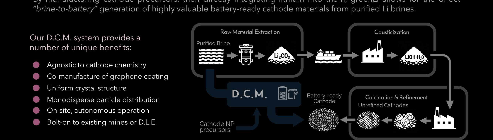

Un proceso propietario que convierte el litio purificado en polvo de cátodo listo para batería en el sitio. Los operadores de activos de litio capturan el margen que hoy fluye hacia refinerías y fabricantes de celdas.
Agnóstico a la Química
NMC, LFP, LMFP, NCA y más
23×
Aumento de valor frente a la salmuera en bruto
Acoplable
Se integra con minas o DLE existentes
El valor vendible del litio se multiplica exponencialmente a través de la cadena de suministro convencional. La operación convencional limita los ingresos de los dueños de activos de Li a sales intermedias de bajo valor. D.C.M. permite a los propietarios acceder al punto de precio completo con un costo relativo mínimo.
$28k
Li₂CO₃
1 tonelada
Carbonato de Li
$75k
LiOH·H₂O
1,14 toneladas
Hidróxido de Li
$110k
Cátodo
precursor
4,27 toneladas
Cátodo en Bruto
$235k
Refinado
cátodo
4,27 toneladas
Cátodo Semi-refinado
$655k
Listo para batería
4,48 toneladas · salida de D.C.M.
Ingresos Convencionales
Los dueños de activos de Li suelen salir en Li₂CO₃ o LiOH, capturando solo los primeros $28k a $75k por tonelada equivalente.
Ingresos con D.C.M.
$655k por tonelada equivalente. D.C.M. permite a los dueños de activos de Li acceder al punto de precio completo.
Hoy, los operadores de activos de litio venden carbonato o hidróxido en un mercado de refinación que no controlan. Las refinerías lo convierten en precursor de cátodo. Los fabricantes de cátodo lo convierten en polvo de cátodo. El margen se acumula en cada paso. Los operadores de activos no ven nada de él.
D.C.M. colapsa esa cadena. El litio pasa de permeado purificado a polvo de cátodo listo para batería en un solo proceso integrado, en el sitio.
Paso 1: Captura en fase sólida. El litio purificado de cualquier alimentación acuosa se concentra sobre un material propietario de captura en fase sólida. Este material es el puente entre la etapa de separación acuosa y el producto de cátodo sólido. Nota: M.L.E. y D.C.M. pueden desplegarse de forma independiente o conjunta; la fuente de alimentación no es un factor determinante. Ambas tecnologías son agnósticas a la química y al tipo de alimentación.
Paso 2: Transferencia al cátodo. El litio capturado se transfiere directamente al material precursor del cátodo. La salida es un polvo de cátodo listo para batería, con la química ajustada a la especificación del cliente. No hay sal intermedia, ni transporte a una refinería, ni planta de conversión.

D.C.M. permite a los operadores vender directamente al mercado de cátodo, capturar el margen de refinación internamente y evitar construir o contratar una refinería. Es agnóstico a la química del cátodo, lo que significa que la misma plataforma puede producir LFP, NMC o futuras químicas a medida que cambia el mercado.
Tres ventajas estructurales:
Margen: capture múltiples etapas de la cadena de suministro en una sola instalación integrada
Agnóstico a la Química: M.L.E. y D.C.M. son ambas agnósticas a la química de la alimentación: cambie de química de cátodo sin reconstruir y despliegue sobre cualquier fuente acuosa de litio
Resiliencia: reduzca la dependencia de capacidad de refinación geográficamente concentrada
D.C.M. no está atada a una sola química de cátodo. Se pueden producir NMC, LFP, LMFP, NCA y químicas emergentes. El cliente o el mercado abierto dicta la especificación del cátodo.
Los propietarios de activos de Li pueden pasar directamente de la salmuera al cátodo listo para batería en el sitio. D.C.M. captura el valor que las cadenas de suministro convencionales distribuyen entre múltiples intermediarios.
El material de cátodo certificado listo para batería puede venderse directamente a fabricantes de baterías en todo el mundo a $655k por tonelada equivalente, frente a $28k por Li₂CO₃ en bruto.
Estructura cristalina uniforme, distribución de partículas monodispersa y co-fabricación opcional de recubrimiento de grafeno, produciendo material de cátodo que cumple y supera las especificaciones del mercado.
D.C.M. está diseñada para operación autónoma en el sitio. Requisitos mínimos de personal, diseño modular y monitoreo remoto permiten el despliegue en ubicaciones remotas o con recursos limitados.
D.C.M. se integra directamente con minas existentes, sistemas de DLE o la salida de M.L.E. No es necesario reconfigurar las operaciones aguas arriba. D.C.M. se conecta al flujo de salmuera purificada.
No se conoce un competidor directo en la producción continua de salmuera a cátodo. La cadena de suministro convencional requiere de 4 a 6 pasos industriales separados, cada uno realizado por una empresa diferente en una geografía diferente.
D.C.M. colapsa esta cadena, permitiendo a los dueños de activos de Li controlar la calidad de salida, los tiempos y la especificación de química de forma independiente de la capacidad de refinación externa.
Enfoque convencional
4 a 6 actores industriales distintos. 18 a 36 meses de plazo de suministro. Salida de química fija por refinería.
Con D.C.M.
1 sistema. En el sitio. Configurable a cualquier química de cátodo. Mercado abierto o suministro cautivo.
T3 2026
Demo Piloto de Escritorio
TRL 3 → 5
T1 2027
Despliegue de Piloto de Prueba
TRL 5 → 6
T3 2027
Escalamiento de Piloto
TRL 6 → 7
T1 2028
Piloto Comercial
TRL 7 → 9
T3 2028
Escalamiento Comercial
TRL 9
Un material propietario concentra el litio del flujo de permeado enriquecido para su integración directa con la fabricación de cátodo. No se conoce competencia directa en este paso.
Un proceso propietario transfiere el litio capturado directamente al material de cátodo en el sitio. Elimina el transporte intermedio y la conversión química. No se conoce competencia directa.
Comparta el perfil de su activo. Repasaremos cómo la integración vertical cambia su economía.